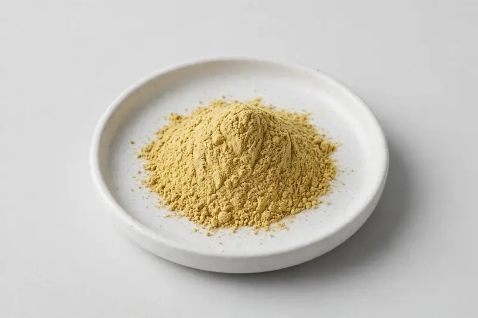

Citrus aurantium fruit extract standardized on synephrine — a botanical for energy and weight-management formulations.

Overview
Bitter orange extract is produced from the fruit of Citrus aurantium and standardized on synephrine, commonly at 6-10%. It appears in energy and weight-management supplement concepts, sometimes in combination with other botanicals. As a Xi'an-based trading company sourcing through vetted partner producers, we ask buyers to specify their target synephrine level and method, then confirm what is feasible and how documentation will be handled.
Specifications below reflect commonly requested options in the market — not a stock list. Share your target spec and we'll confirm exactly what we can supply, honestly.
| Specification | Details |
|---|---|
| Botanical identity | Citrus aurantium fruit extract powder |
| Source material | Fruit |
| Marker compound | Synephrine — commonly requested: 6-10% |
| Appearance | Light yellow to yellowish-brown fine powder |
| Analytical methods | Methods referenced in buyer specifications: HPLC |
| Mesh size | Typically 80–100 mesh (confirm per inquiry) |
| Testing | COA/TDS arranged on request; scope agreed per your spec |
Applications
Documentation
We don't claim in-house labs or certifications we don't hold. COA and TDS documents can be arranged on request, and testing scope is agreed against your specification before supply.
FAQ
Related products
Hesperidin (Citrus spp.)
Key marker: Hesperidin 90-98%
View specs →Betaine (trimethylglycine)
Key marker: Betaine 96-99%
View specs →Theobroma cacao
Key marker: Theobromine 10-20%
View specs →Sodium hyaluronate (fermentation-derived)
Key marker: Cosmetic & food grades
View specs →Hydrolyzed collagen (bovine/marine)
Key marker: Type I & III, bovine/marine
View specs →Send your target spec and volumes — we'll respond with a tailored quotation.
Request a Quote